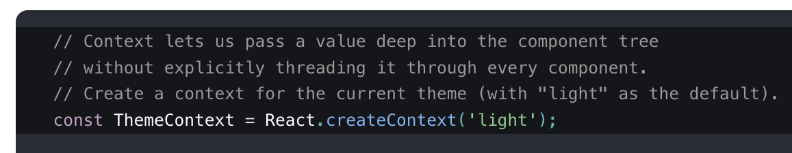
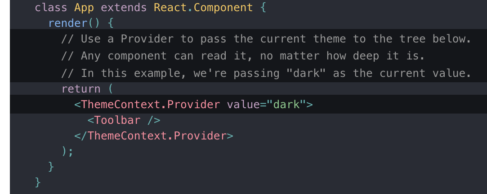
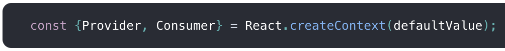
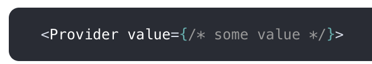
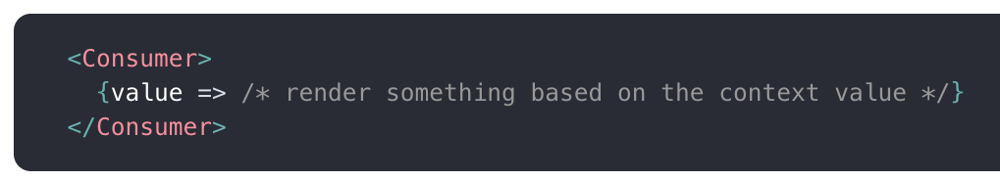
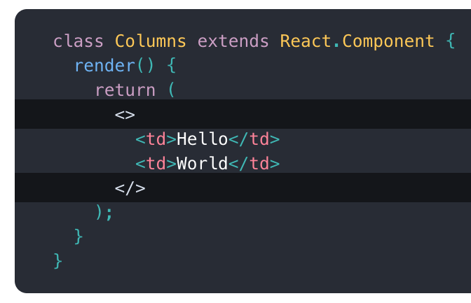
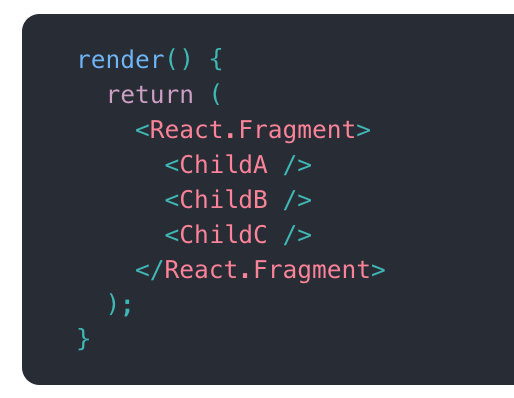

What's new in
React 16
by Jhankar Mahbub / @jsdude005
Who is
JS Dude?

- @jsdude005
- Organize Chicago JavaScript Meetup
- Sr. Web Developer, Nielsen
- React, Redux and JavaScript Trainer
- Enjoy Learning, Talking about JavaScript
Jump from 14,000ft

Marathon 2016, 2017

10,000 volts

international Javascript conference, London

We will Discuss
- React Fiber
- Context API
- Portals, Fragments
- Component Life Cycle changes
- Few other change
React Fiber
Rendering Engine
- Rendering engine for the browser is single threaded
- Nearly all actions happen synchronously
- Previously, React would block the entire thread while calculating DOM tree
- Would block the main thread
- Could cause some applications to not feel fluid

What was the problem?
- React suited well for rendering data structures
- Rendering a DOM tree or WebGL scene graph
- Animation suffer the cost of Reacts' inner working
- Skip style visually imperceptible updates
React Fiber
- Think working at a company without git.
- You are in the middle of a huge feature
- Your boss needs a hotfix right now
- With git, you don’t have to worry
- React Fiber can pause and resume work at will
- Get what matters on screen as quickly as possible! 🎉
Async Rendering
- Re-implementation of React core algorithm
- Rendering work can be split into chunks
- Spread out over multiple frames
- React computes part of the tree
- Pause rendering to check the main thread
- If any paints or updates need to be performed
- When paints/ updates completed, React begins rendering again
- Accomplished by a data structure called a “fiber”

Prioritize Updates
- Prioritize updates by importance
- High priority updates jumps to front of line
- Processed important stuff first
- Like: keyboard input gets high priority
- API response will get low priority
Fiber Explanation

Why Fiber
- Breaking the UI updates into smaller units of work
- Better overall user experience is achieved
- Allow the main thread to execute other necessary tasks
- Provides a smoother interface
- Better perceived performance
Fiber demo
Context
App Level settings?
- Pass data through the component tree?
- Pass data manually every level as props
- Like: Current locale, theme, user Context
- Not very developer friendly.
Context
- Gives you the power to pass data to child component
- Without passing props down manually at every level
- Share values like these between components
Create Context
 API
  Don’t use context just to avoid passing props a few levels down.
Advanced Usage
- Dynamic Context
- Updating Context from a Nested Component
- Consuming Multiple Contexts
- Accessing Context in Lifecycle Methods
- Consuming Context with a HOC
- Forwarding Refs to Context Consumers
Portals
Portals
- A first-class way to render children into a DOM
- Add children form outside the DOM hierarchy
- Any renderable React child: element, string, or fragment
- Useful for dialogs, hovercards, and tooltips
- Parent will be able to catch event bubble
- Portal will get the context as if regular DOM

Fragments
Fragments
Group a list of children without adding extra nodes to the DOM
Fragments look like empty JSX tags
Fragment
Lifecycle changes
Lifecycle methods
- componentWillMount
- componentWillReceiveProps
- componentWillUpdate
- getDerivedStateFromProps
- getSnapshotBeforeUpdate
- componentDidCatch

Functional SetState
Update State
- Usually update our state just passing an object
- Describing the changes we would like to make
- React assign those values and trigger an update
- Pass a function to setState() that takes state and props
- Return your desired state
- React will use for the update.
- Can decouple state set from component
- export it from a new file and reuse it
Prevent Re-render
- prevent state updates and re-renders right from setState()


Error Handling
Error Boundaries
- Previously, errors inside components would corrupt React’s state
- No Meaningful error message
- React 16 includes error boundaries
- Catch errors anywhere in child component tree
- Clearer error messaging, log, display error UI
- Prevent the entire application from breaking

Custom DOM Attributes
Unknown DOM attributes that are not props would get ignored pre-React 16

Learn New thing
Learn react by building
- Build an e-commerce site

thatjsdude.com/workshops/react
Email: khan4019@gmail.comReferences
Thank you
-Website: thatjsude.com
-Workshop: thatjsdude.com/workshops/react/
-Youtube: youtube.com/c/ThatJSDude
-Email: khan4019@gmail.com